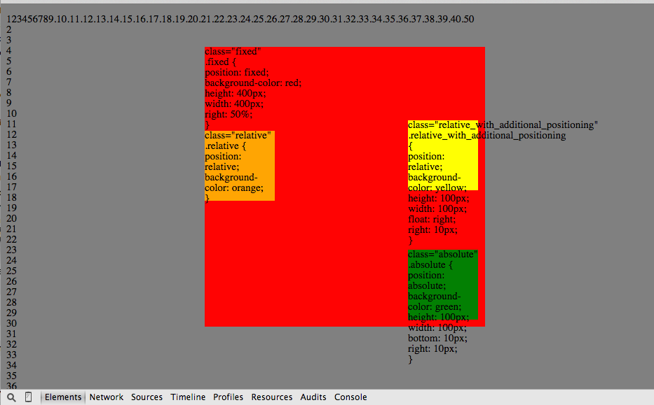
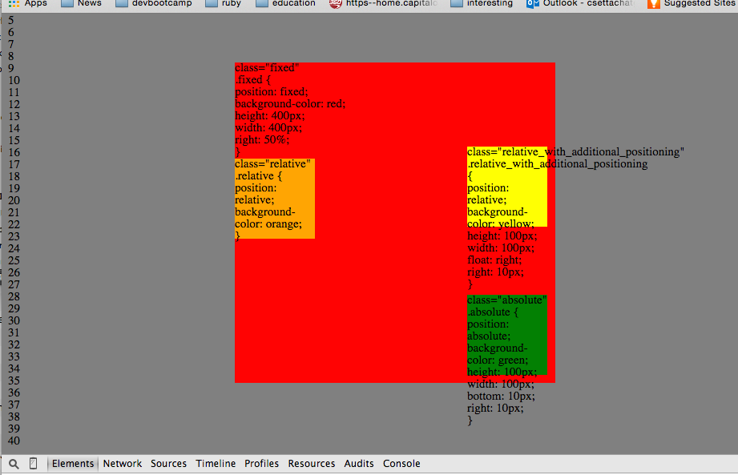

This stuff is pretty amazing
There are 3 important ways to specify the position attributes value. Each of the 3 values of relative, absolute, and fixed enable features of an html document to behave differently on an html document.
Relative
Relative positioning means it is repositioned relative to where it would have been if no positioning attributes were given to the element. For example an html element positioned at coordinates x and y may not be given additional positioning attributes such as top, left, bottom or right. The position will still remain at coordinates x and y on the page. If positioning attributes are given to this feature such as top 10px. The 10px would shift the item 10px down from the y coordinate, not from the top of the html page. The shift occurs relative to the former x and y coordinates.
The syntax for relative positioning of a div is:
div { position: relative;}
Absolute
allows you to literally place any page element exactly where you want it.
The positioning will be relative to the direct parent element that is positioned absolute or relative. If there is no parent that is absolute or relative, then the relative positioned will be positoned relative to the html document element.
The syntax for absolute positioning of a div is:
div { position: absolute;}
Fixed
A fixed position element is positioned relative to the viewport, or the browser window itself. The viewport doesn't change when the window is scrolled, so a fixed positioned element will stay right where it is when the page is scrolled, creating an effect a bit like the old school "frames" days
The syntax for fixed positioning of a div is:
div { position: fixed;}
In the 2 below images there is a large div element that has a postion: fixed. The CSS block is written below the class="fixed" designation. As you can see the div element stays in place even though we scroll down shown in the image below. The block stays in place in relation to the browser window.
The orange block is a relative div element with no additional positioning so that it appears below the text for the css code block.
The yellow block is a similar relative positioned element but has additional positioning so that it is floated right float: right of where it would have been otherwise and also moved left 10px with right: 10px
The green block is a block position: absolute. It is positioned relative to the fixed red block but the positioning is not relative to the flow of the html document. If the block were positioned relative it would have been positioned relative to a position just below the organge block. In this case the additional positioning is absolute relative to the parent element.
 